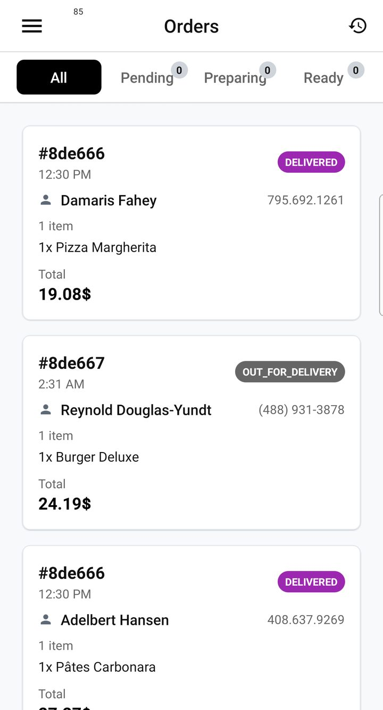
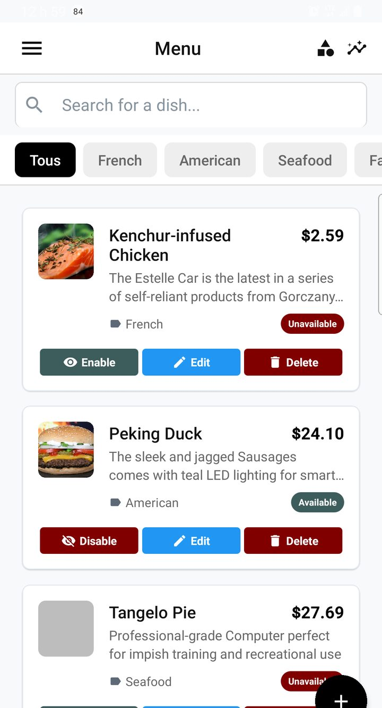
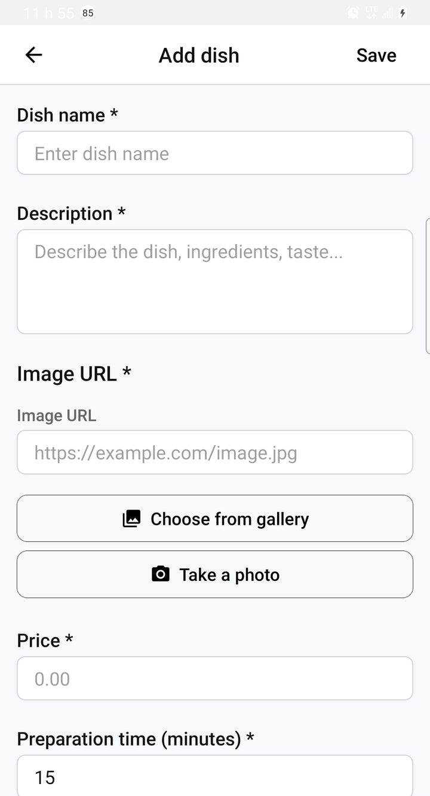
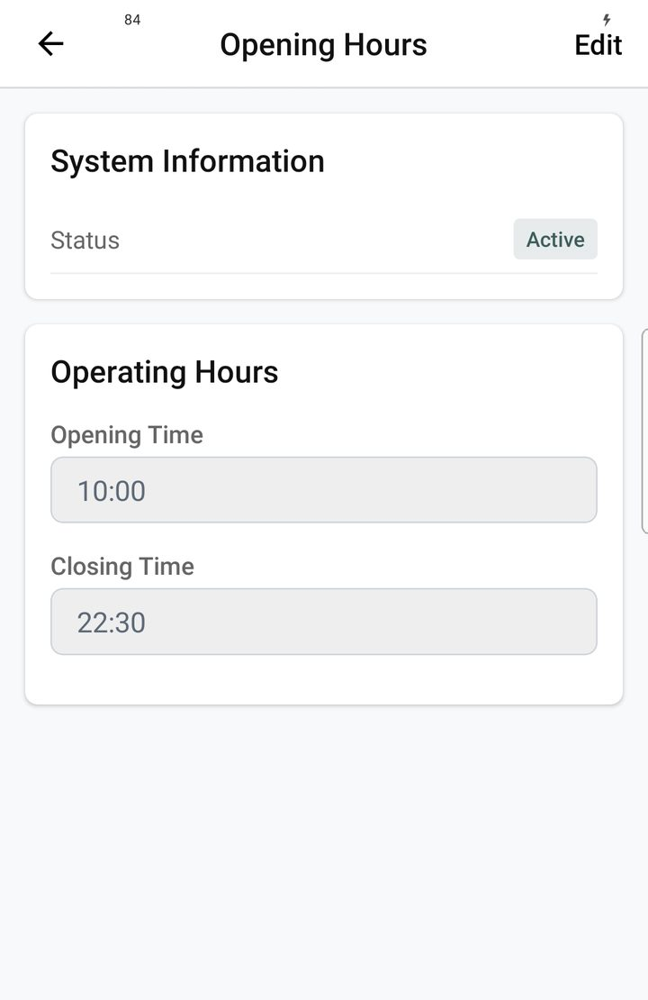
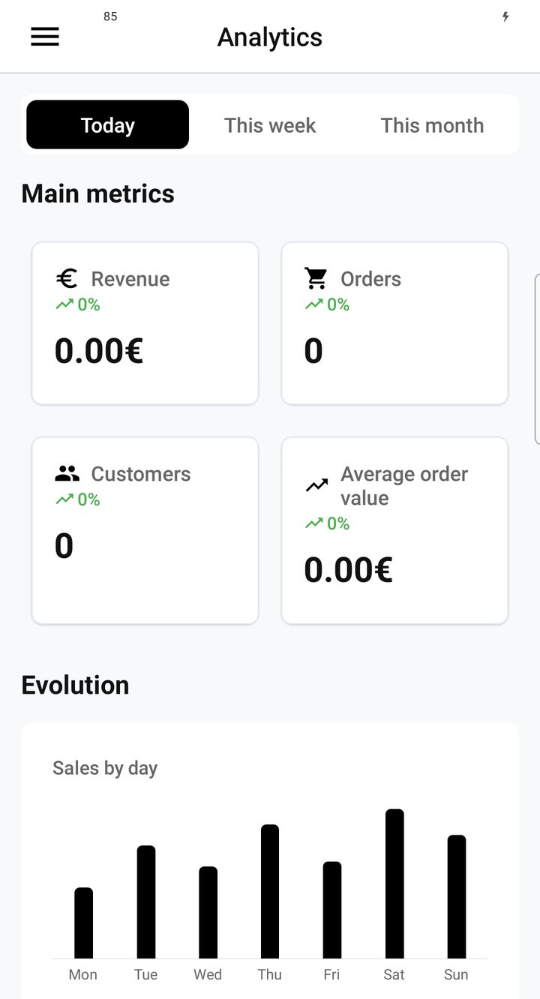

Orders & menu
Day-to-day partner ops: accept or reject orders, manage the menu, set hours, and read analytics — before or beside the Kitchen Display.
Live orders: accept and reject
Incoming orders land in the restaurant orders list in real time. Operators accept or reject, then move the meal through prepare / ready so the driver (or pickup customer) can collect it. New-order alerts can deep-link back to the order so nobody misses a ticket during rush.
For a paperless board on the pass, use the Kitchen Display (KDS) — it shares the same order pipeline.

Service loop
- Keep the restaurant open when you can fulfill orders.
- Watch the orders list; accept what you can cook, reject with a clear reason when you cannot.
- Advance status as food progresses; mark ready for courier or pickup.
- Use order history when you need past tickets or disputes.
Menu, hours, and analytics
Partners manage categories, dishes, prices, photos, variants, and availability from the restaurant app — without waiting on admin for every price tweak. Opening hours and delivery / pickup controls define when and how far you sell. Analytics help owners see what is working after a few service days.
Menu management
The menu screen is the catalog home: categories and items customers will browse. From here partners add dishes, reorder sections, and keep the sellable list honest for the next rush.
- Open Menu from the restaurant drawer.
- Add or edit categories and items; set prices and photos.
- Toggle availability when an item is 86’d so customers cannot order it.

Add or edit an item
Item forms cover name, price, photo, variants, and availability. Getting this right once prevents “price wrong on the app” tickets and keeps kitchen tickets aligned with what the customer paid for.

Opening hours
Opening hours and delivery settings (radius, prep time) tell the customer app when the restaurant is open and how far it delivers. Out-of-date hours create orders you cannot fulfill — fix them before service, not after the first rejection.

Analytics
Dashboard KPIs and analytics (periods, bestsellers, peaks) help owners see what sells and when. Use them after a few real service days — empty charts on day one are normal; quiet slots and bestsellers appear once orders accumulate.
